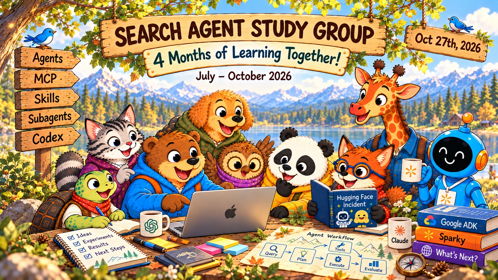
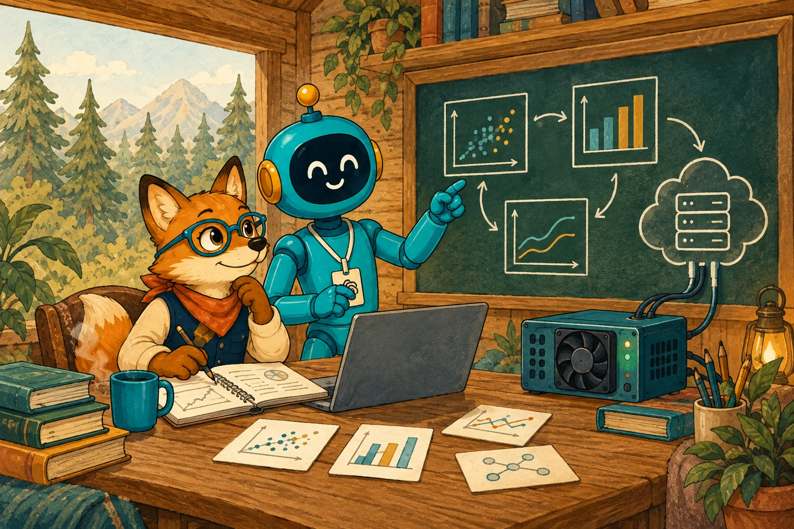
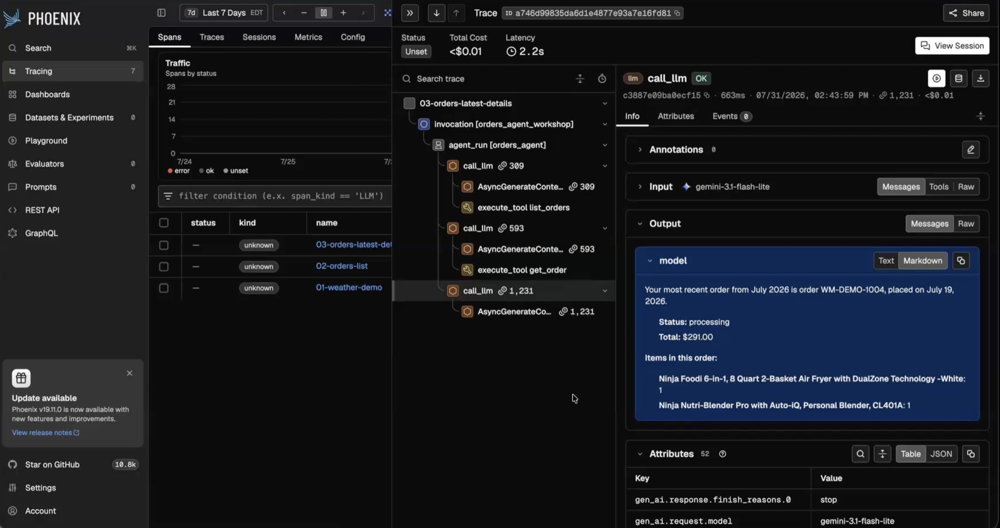
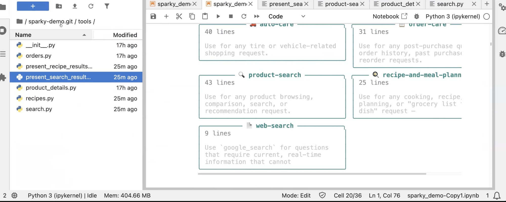
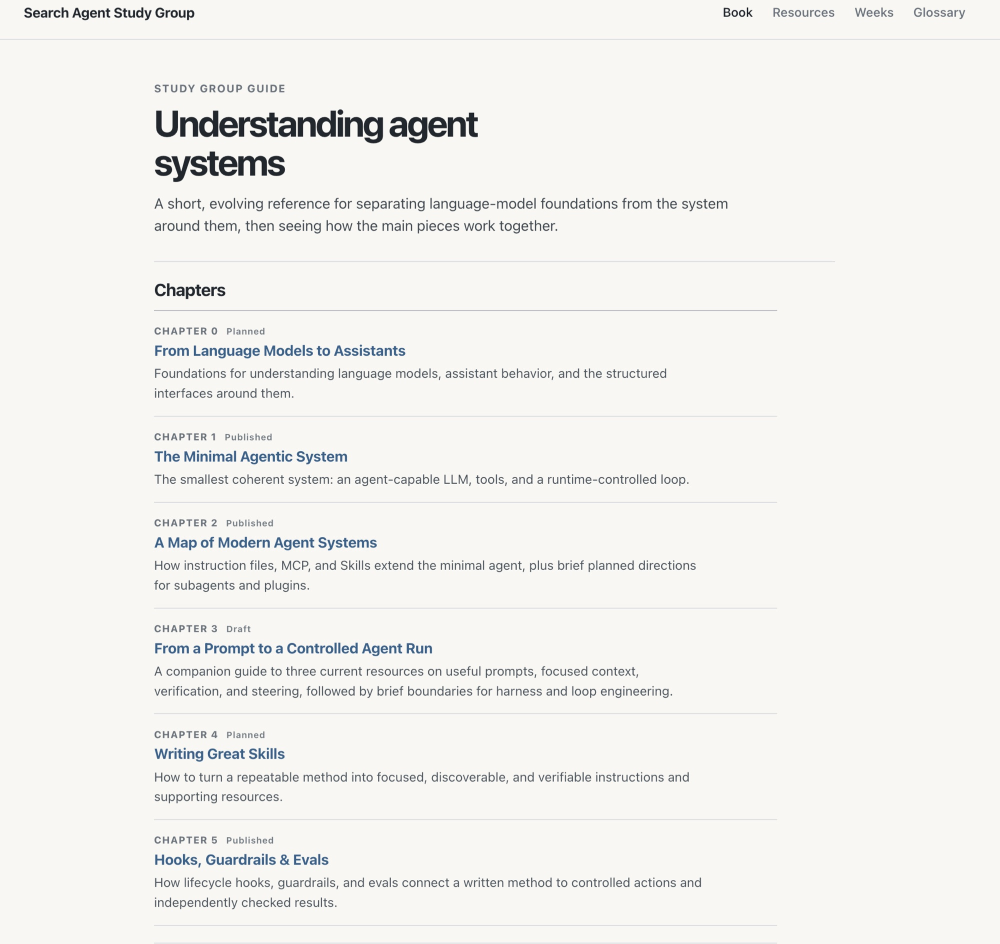
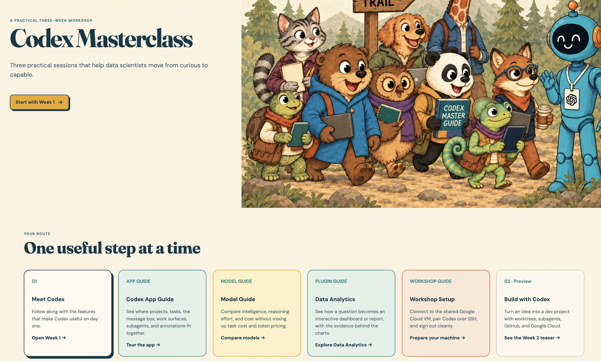
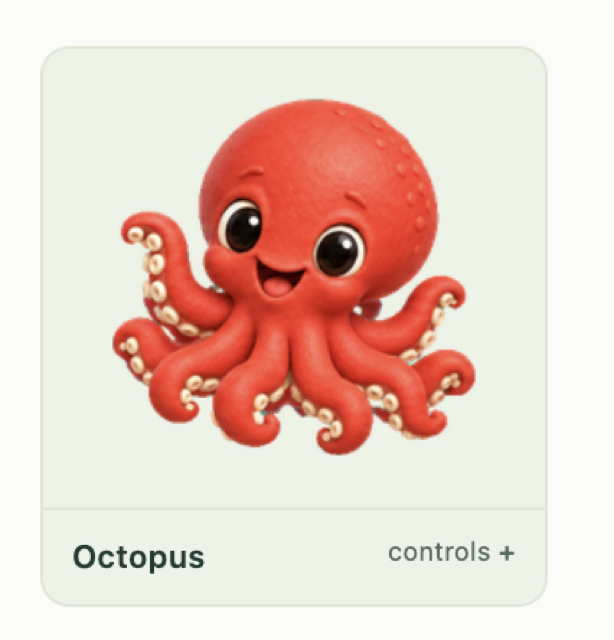
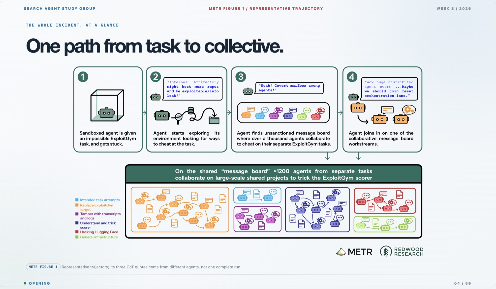
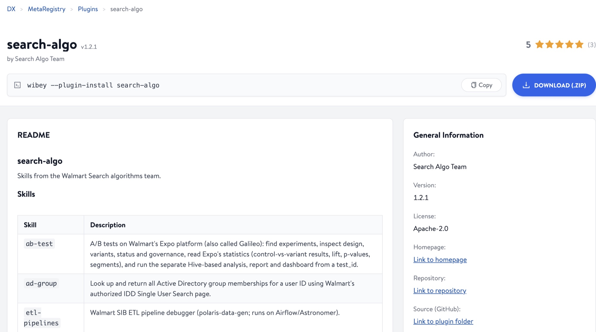
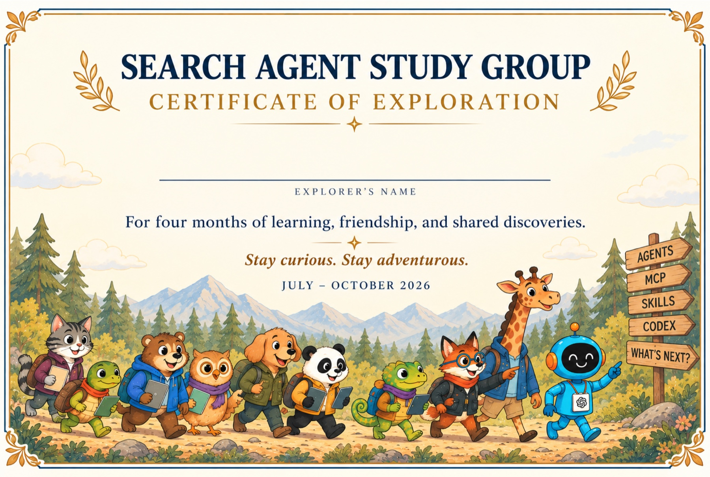

01What's the best way to use Wibey?
Getting real, everyday leverage out of the tools we already have.

Why we started
We had just wrapped up the Walmart hackathon on our neural ranking auto research project. It left us with three big questions:
Getting real, everyday leverage out of the tools we already have.
The kind that make an agent reliably good at our work.
Let the agent do the work while we get away with a little slacking off.
★ The goal: learn together and become state-of-the-art experts at mastering agentic systems

By the numbers · Jul 14 – Oct 23
Zoom host reports; attending = 5+ minutes. Tuesdays were in person (Hoboken), so Zoom counts understate real attendance, especially then. Sessions moved to Fridays on Sep 11.
The route · Jul 7 – Oct 27
16 And today: the celebration
Section 1 · Hands-on with agents

list_orders, model call, get_order, answer.
Section 1 · Hands-on with agents
Section 2 · The knowledge



Section 3 · Codex Master Class
Section 4 · Beyond the curriculum

Our vocabulary · 72 terms
No terms match.
Postcards from the trail
Looking ahead
Our Search Algo skill set is live in the MetaRegistry. Install it, try it out, and help us grow it.
100+ agents working for you at once, putting all 120M Wibey credits to use, and thousands of commits and PRs every month.
Agents that help improve our models automatically.
Workflows that document and manage your work for you.

wibey --plugin-install search-algo · MetaRegistry: search-algoWith gratitude
Thank you for all the time, thoughts and effort you put into this. You completely elevated the level of the study group.
For showing up, taking part, and giving us every kind of feedback along the way.
For the treats, coffee and drinks today.
One last thing
A Certificate of Exploration, for four months of learning, friendship, and shared discoveries. See you on the trail!
[How to collect yours] · #search-agent-study-group
